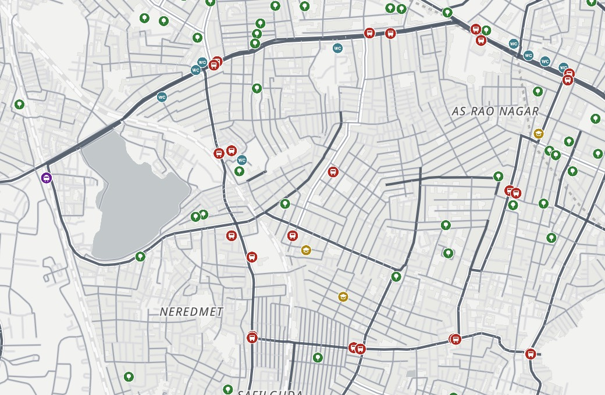

Tap a stop to see every stop you can reach without changing buses, and the routes that serve it.
Route lines are drawn onto the road network automatically and can wander on long routes. The open GTFS timetables behind them have gaps and errors of their own.
Pick a corporation, then a ward, from the breadcrumb at the bottom left, or click an area on the map.Pick a corporation, then a ward, from search, or tap an area on the map. The card shows how much of it is within a short walk of each amenity.
How walkable is your part of Hyderabad? This map shows how far you can get on foot in 5, 10 or 15 minutes from any spot, what you can reach, and what the walk is like. Everything is precomputed for every block-sized hexagon of the city and served as plain files, so the map is fast, free to host, and needs no login.
This is not a routing app and it is not live: it tells you what is within reach, not how to get there right now.
Please read before using these numbers. This is a research tool under continuous development. The figures come from open data and automated models, and both can be wrong: amenities may be missing, misplaced or closed, street networks incomplete, and timetables out of date. Walk times are estimates for an average adult and will differ for children, older people and anyone with a disability. Check on the ground before relying on this for planning, funding or policy decisions. No warranty is given, and the Hyderabad Urban Observatory accepts no liability for decisions taken on the basis of it.
Street. Move over the map, or tap on a phone, and the outlined area is everything you can reach on foot within 5, 10 or 15 minutes. Pin a spot to see the nearest bus or metro stop, school, park and public toilet, how shaded and steep the walk is, and what else is nearby. Streets can be coloured by shade, tree cover, slope or road type.
City. The whole city coloured by walk time to the nearest of what you picked, from teal (close) to orange (far). Pick a corporation or ward in the breadcrumb for its figures.
Transit. Every bus, metro and MMTS stop, sized by how much service it actually gets. Tap a stop to see every stop you can get to without changing buses, and the routes that serve it.
The hexagons. The city is divided into H3 hexagons at resolution 10. The "65 m" often quoted is the length of one edge. A cell is about 114 m across from flat side to flat side, 132 m from corner to corner, and covers about 1.5 hectares, roughly one residential block. The next coarser size (174 m edges, 10.5 hectares) would give two sides of a main road the same walk time and turn the 5-minute ring into a blob. The next finer size (25 m edges) would mean seven times as many cells with no better answers, since neighbouring cells on the same street snap to the same point anyway.
Walk time from a cell. Three steps. First, the cell's centre is snapped to the nearest junction or bend in the street network, built from OpenStreetMap ways split at every intersection. A cell more than 300 m from any street is marked unreachable. Second, every street segment gets a walk time: 4.5 km/h on the flat, slowed on slopes by Tobler's hiking function, so a 5% grade costs about 15% of speed and a 10% grade about 30%. Slope comes from the terrain model and exists only in the four core corporations; elsewhere streets are treated as flat. Third, a shortest-path search runs outward from the snapped point with a 15-minute cutoff. The 5, 10 and 15 minute outlines are the union of every segment reached in time, widened by 30 m and simplified by 10 m for display, which is why they hug the streets rather than filling blocks.
Walk to the nearest, and the counts. This runs the other way round. Every amenity is snapped to the network and a 15-minute search runs outward from it. Each cell it reaches records the time; the cell keeps the smallest per category as its "nearest", and counts each amenity that arrived within 5, 10 and 15 minutes. Amenities of the same type within 40 m of each other are merged first, with the GHMC record preferred over OpenStreetMap, so a pair of bus stops on opposite sides of a road counts once.
What that means for accuracy. Everyone in a cell gets the time from its centre's snap point. The far corner of a cell is at most about 65 m from that point, under a minute on foot, which is within the one-minute precision the map shows. The larger errors are the ones listed above: missing or misplaced amenities, gaps in the street data, and footpaths and crossings that are not modelled yet.
OpenStreetMap contributors (streets, parks, amenities, buildings) · GHMC public amenities (2023) · TGSRTC bus GTFS (June 2026) · HMRL metro GTFS (July 2026) · MMTS GTFS (2019) · Meta / WRI 1 m canopy height (Tolan et al. 2024) · Google Open Buildings 2.5D · FABDEM 30 m terrain · GHMC and HMDA boundaries. Basemap: OpenFreeMap, OpenMapTiles, OpenStreetMap.
Built by the Hyderabad Urban Lab as part of the Hyderabad Urban Observatory, alongside the Lake Atlas and the weather dashboard. It is under continuous development; write to hulf.observatory@gmail.com with corrections or ideas.